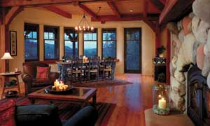

It may sound odd, but walls made from plaster-coated straw balesare a popular alternative building option. Advocates say straw balehouses are attractive, affordable, energy efficient,environmentally friendly and can be designed in many styles. Hereare expert answers to common questions about straw bale homes,provided by Chris Magwood, Peter Mack and Tina Therrien, authors ofthe new book,More Straw Bale Building.
Fireproof? Tests have confirmed that straw bale walls arenaturally fire resistant. When straw is compacted into bales,there's not enough air for the straw to burn well. The plastercoating seals the bales into a noncombustible casing.
Moisture? The plaster coating on straw bale walls preventsmoisture migration through walls, and proper constructiontechniques, such as raising the bale walls off the foundation andonto a wooden curb, will ensure that any spills or floods insidethe house will not soak into the walls.
Pests? The ideal homes for pests offer openings, nests andfood?all of which are not found in properly maintained straw balewalls. Plaster seals the bales with a protective barrier againstpests. Should a gap be left open, the densely packed balesdiscourage rodents from making it their home. Stick-frame wallsmake a much more inviting space for pests, especially when thewalls are packed with soft batt insulation.
Building Costs? Because bales are more user friendly thanother wall systems, you can save on labor costs on new constructionby doing the work yourself. Most people combine hired help withtheir own labor and that of family, friends and neighbors.
|
 |
|
|